기계정비산업기사 (2015-08-16 기출문제)
1과목: 공유압 및 자동화시스템
1. 다음 기호의 명칭으로 적합한 것은?
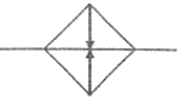
- 냉각기
- 온도 조절기
- 가열기
- 드레인 배출기
(정답률: 82%)

2. 다음 중 표준 대기압에 해당되지 않는 것은?
- 760mmHg
- 10.33mAq
- 14.7 mbar
- 1.033kgf/cm2
(정답률: 71%)
3. 오일 탱크의 용도로 적합하지 않은 것은?
- 유압 에너지 축적
- 유온 상승의 완화
- 기름 내의 기포 분리
- 기름 내의 불순물 제거
(정답률: 63%)
4. 서비스 유닛을 구성하는 기기의 순서가 올바른 것은?
- (유입측) - 필터 - 윤활기 - 압력조절기 - (유출측)
- (유입측) - 필터 - 압력조절기 - 윤활기 - (유출측)
- (유입측) - 압력조절기 - 필터 - 윤활기 - (유출측)
- (유입측) - 압력조절기 - 윤활기 - 필터 - (유출측)
(정답률: 70%)
5. 피스톤형 축압기의 특징으로 옳지 않은 것은?
- 대용량도 제작이 용이하다.
- 공기 에너지를 저장할 수 있다.
- 형상이 간단하고 구성품이 적다.
- 유실에 가스 침입의 염려가 있다.
(정답률: 52%)
6. 공기 압축기에서 표준 대기압 상태의 공기를 시간당 10m3씩 흡입한다. 이 공기를 700kPa로 압축하면 압축된 공기의 체적은 악 몇 m3 인가? (단, 압축 시 온도의 변화는 무시한다.)
- 1.26
- 1.43
- 2.43
- 3.25
(정답률: 41%)
7. KS B 0⑤4(유압, 공기압 도면 기호)의 기호 요소 중 정사각형의 용도가 아닌 것은?
- 실린더
- 제어기기
- 유체 조정기기
- 전동기 이외의 원동기
(정답률: 63%)
8. 유압 액추에이터의 속도조절용 밸브는?
- 축압기
- 압력제어밸브
- 방항제어밸브
- 유량제어밸브
(정답률: 77%)
9. 공유압 변환기와 에어 하이드로 실린더를 조합하여 사용할 때의 주의사항으로 옳은 것은?
- 공유압 변환기는 수평으로 설치한다.
- 공유압 변환기는 수직으로 설치한다.
- 공유압 변환기는 30° 경사를 주어 설치한다
- 공유압 변환기는 45° 경사를 주어 설치한다.
(정답률: 69%)
10. 유압 실린더를 구성하는 기본적인 부품이 아닌 것은?
- 커버
- 피스톤
- 스풀
- 실린더
(정답률: 76%)
11. 다음 논리식 중 틀린 것은?
- Aㆍ0 = 0
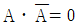
- A + 1 = 1
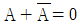
(정답률: 75%)
12. 설비의 로스(Loss)중 정지로스에 해당되는 것은?
- 순간정지로스, 속도저하로스
- 고장정지로스, 작업준비ㆍ조정로스
- 초기유통관리수율로스, 순간정지로스
- 불량ㆍ수정로스, 초기유통관리수율로스
(정답률: 77%)
13. 확산반사형 혹은 직접반사형 광센서를 사용할 때, 다음 중 감지거리가 가장 긴 것은?
- 목재
- 금속
- 면직물
- 폴리스틸렌
(정답률: 81%)
14. 슬레노이드 밸브에서 전압이 걸려 있는데도 아마추어가 작동되지 않는 원인과 가장 거리가 먼 것은?
- 코일의 소손
- 아마추어의 고착
- 전압이 너무 낮음
- 실링 시트의 마모
(정답률: 62%)
15. 빛을 이용하여 물체 유무를 검출하거나 속도, 위치결정에 응용되는 센서는?
- 포토 센서
- 리드 스위치
- 유도형 센서
- 용랑형 센서
(정답률: 79%)
16. 다음 중 되먹임 제어(feedback control)에서 꼭 필요한 장치는?
- 안정도를 좋게 하는 장치
- 응답속도를 빠르게 하는 장치
- 응답속도를 느리게 하는 장치
- 입력 과 출력을 비교하는 장치
(정답률: 87%)
17. 개회로 제어 시스템(open loop control system)을 적용하기에 적합하지 않은 제어계는?
- 외란 변수의 변화가 매우 적은 경우
- 여러 개의 외란 변수가 존재하는 경우
- 외란 변수에 의한 영향이 무시할 정도로 적은 경우
- 외란 변수의 특징과 영향을 확실히 알고 있는 경우
(정답률: 74%)
18. 다음 그림의 기호가 의미하는 것은?
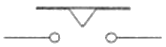
- 한시동작 타이머 a접점
- 한시동작 타이머 b접점
- 한시복귀 타이머 a접점
- 한시복귀 타이머 b접점
(정답률: 60%)
19. 8비트의 2진 신호로 표현되는 0~10V의 아날로그 값의 최소 범위는?
- 0.039V
- 0.042V
- 0.045V
- 0.048V
(정답률: 63%)
20. 그림과 같은 논리회로의 동작 설명으로 옳은 것은?
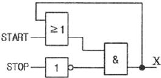
- STOP을 누를 때만 출력 X에 신호가 나온다.
- START를 누를 때만 출력 X에 신호가 나온다.
- START를 한번 누르면 출력 X에는 펄스신호가 발생한다.
- START를 한번 누르면 STOP 버튼을 누르기 전까지 출럭 X에는 신호가 존재한다.
(정답률: 80%)
2과목: 설비진단관리 및 기계정비
21. 보전용 자재 관리상 특징이 아닌 것은?
- 불용 자재 발생 가능성이 높다.
- 보전용 자재는 비순환성이 높다.
- 연간 사용 빈도가 적고, 소비 속도가 늦다.
- 자재 구입의 품목, 수량, 시기 등의 계획 수립이 어럽다.
(정답률: 47%)
22. 자주보전 활동 7단계 내용 중 단계에 대한 활동내용이 틀린 것은?
- 제1단계 : 초기 청소
- 제2단계 : 청소, 급유 기준 작성과 실시
- 제4단계 : 총 점검
- 제5단계 : 자주 점검
(정답률: 68%)
23. 보전요원의 각 보전작업에 대한 표준화로 수리 표준시간, 준비작업 표준시간 또는 분해검사 표준시간을 결정하는 것은?
- 보전작업표준
- 설비성능표준
- 설비점검표준
- 일상점검표준
(정답률: 69%)
24. 제품별 배치의 장점에 속하지 않는 것은?
- 1회의 대규모 사업에 많이 이용된다.
- 정체시간이 짧기 때문에 재공품(在工品)이 적다.
- 공정이 단순화되고 직접 확인 관리를 할 수 있다.
- 작업을 단순화할 수 있으므로 작업자의 훈련이 용이하다.
(정답률: 62%)
25. 보전작업 표준에서 표준시간의 결정방법에 해당하지 않은 것은?
- 경험법
- 실존법
- 실적자료법
- 작업연구법
(정답률: 61%)
26. 석유 제품의 산성 또는 알칼리성을 나타내는 것으로서 산화 조건하에서 사용되는 동안 기름 중에 일어나 변화를 알기 위한 척도로 사용되는 것은?
- 전산가
- 중화가
- 산화 안정도
- 혼화 안정도
(정답률: 71%)
27. 진동 차단기로 이용되는 패드의 재료로 부적합한 것은?
- 스프링
- 코르크
- 스폰지 고무
- 파이버 글라스
(정답률: 71%)
28. 구름 베이링 결함에 대한 설명으로 맞는 것은?
- 1X 성분의 조화파가 많이 나타난다.
- 1X 성분이 수직 및 수평방항에서 뚜렷하게 나타난다.
- 수직방항에서 1X 성분이 나타나고 수평방항에서 2X, 3X 성분이 나타난다.
- 고주파 영역에서 비동기 성분의 피크 값이 나타나고 시간파형에서 충격파형 형태로 관찰된다.
(정답률: 58%)
29. 다음 특징의 설비배치 형태는?
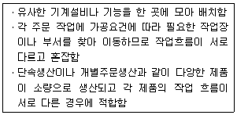
- 공정별 배치
- 제품별 배치
- 혼합형 배치
- 고정위치 배치
(정답률: 73%)
30. 보전 비용을 들여 설비를 안정된 상태로 유지하기 위하여 발생되는 생산손실은?
- 기회원가
- 매몰손실
- 이익손실
- 차액손실
(정답률: 75%)
31. 진동 시스템에서 질량은 그대로 유지하고, 강성을 증가시키면 고유 주파수는 어떻게 되는가?
- 고유 주파수가 증가한다.
- 고유 주파수가 감소한다.
- 고유 주파수가 변하지 않는다.
- 고유 주파수는 증가하다가 감소한다.
(정답률: 65%)
32. 설비진단기술의 정의로 가장 적합한 것은?
- 설비를 교정하는 것
- 설비의 경제성을 펑가하는 것
- 설비를 투자할 것인지 결정하는 것
- 설비의 상태를 정량적으로 관측하여 예측하는 것
(정답률: 82%)
33. 내부에 형성되어 있는 하나 혹은 그 이상의 챔 (chamber)에 의해서 입사 소음 에너지를 반사하여 소멸시키는 장치는?
- 반사 소음기
- 회전식 소음기
- 흡음식 소음기
- 흡진식 소음기
(정답률: 80%)
34. 집중보전에 대한 특징으로 틀린 것은?
- 보전요원이 용이하게 생산요원에게 접근할 수 있다.
- 긴급 작업, 고장, 신규 작업을 신속히 처리할 수 있다.
- 보전요원의 기술 향상을 위한 교육 훈련이 보다 잘 행해진다.
- 보전요원이 생산작업에 있어서 생산요원에 비해 우선 순위를 갖는다.
(정답률: 50%)
35. 윤활제의 급유법 중 순환급유법에 속하는 것은?
- 수 급유법
- 비말 급유법
- 적하 급유법
- 사이펀 급유법
(정답률: 52%)
36. 설비관리의 목표는?
- 손실 감소
- 품질 향상
- 기업의 생산성 향상
- 기업의 이윤 극대화
(정답률: 62%)
37. 음의 전파 중 장애물 뒤쪽으로 음이 전파되는 현상은?
- 음의 간섭
- 음의 굴절
- 음의 확산
- 음의 회절
(정답률: 72%)
38. 고장 분석에서 설비관리의 목적인 최소 비용으로 최대 효율을 위해 계획, 진행하는 것과 관계없는 것은?
- 경제성의 향상 : 가능한 비용을 절감한다.
- 신뢰성의 향상 : 설비의 고장을 없게 한다.
- 유용성의 향상 : 설비의 가동율을 높인다.
- 보전성의 향상 : 고장에 의한 휴지시간을 단축한다.
(정답률: 65%)
39. 주파수, 진폭 및 위상이 같은 두 진동 파형이 합성되면 진동 형태는 어떻게 변화되는가?
- 주파수, 진폭 및 위상이 두 배로 증가한다.
- 주파수와 진폭은 변하지 않고 위상이 변한다.
- 주파수와 위상은 변동이 없고 진폭만 두 배로 증가한다.
- 진폭과 위상은 변동이 없고 주파수만 두 배로 증가한다.
(정답률: 64%)
40. 정현파의 경우 평균값은 피크값의 몇 배인가?
- π
- 2π
- 2/π
- π/2
(정답률: 63%)
3과목: 공업계측 및 전기전자제어
41. 전압 폴로워(Voltage follower)에 대한 설명으로 틀린 것은?
- 전압이득이 1에 가깝다.
- 반전 증폭기이다.
- 임피던스 변환회로이다.
- 입력 임피던스가 크다.
(정답률: 52%)
42. 열전대 조합으로 많이 사용하지 않는 것은?
- 백금로듐 - 백금
- 크로멜 - 알루멜
- 철 - 콘스탄탄
- 구리 - 알루멜
(정답률: 65%)
43. 전자의 에너지 준위 M각에 들어갈 수 있는 전자의 수는 얼마안가?
- 4개
- 8개
- 18개
- 32개
(정답률: 71%)
44. 회전하고 있는 전동기를 역회전되도록 접속을 변경하면 급정지한다. 입연기의 급정지용으로 이용되는 제동방식은?
- 플러깅제동
- 회생제동
- 다이나믹제동
- 와류제동
(정답률: 61%)
45. 어느 교류 전압의 순서값이 ʋ = 311ㆍsin(2π×60t)V 라고 하면, 이 전압의 실효값은 약 몇 V인가?
- 110
- 125
- 220
- 311
(정답률: 57%)
46. 변환기에서 노이즈 대책이 아닌 것은?
- 실드의 사용
- 비접지
- 접지
- 필터의 사용
(정답률: 80%)
47. 100V, 20W의 전구에 50V의 전압을 가했을 때의 전력은 몇 W인가?
- 20
- 10
- 5
- 3
(정답률: 44%)
48. 계측계를 기능적으로 크게 분류했을 때 해당되지 않는 것은?
- 검출기
- 조작기
- 전송기
- 수신기
(정답률: 53%)
49. 3상 유도 전동기의 속도제어법이 아닌 것은?
- 계자제어
- 주파수제어
- 2차 저항 조정
- 극수변환
(정답률: 43%)
50. 방사선식 액면계에서 2위치 검출용으로 적당한 형식은?
- 정점 감시형
- 추종형
- 투과형
- 조사형
(정답률: 55%)
51. 그림에서 정전 용랑 C1, C2를 병렬로 접속하였을 때의 합성 정전 용랑 CAB는?
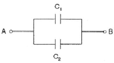
- C1 + C2
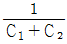
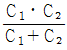
- C1ㆍC2
(정답률: 62%)
52. 반도체에 대한 설명 중 맞는 것은?
- N형 반도체에 혼입된 불순물을 억셉터라 한다.
- p형 반도체에 혼입된 불순물을 도너라 한다.
- 불순물 반도체에는 P형과 N형이 있다.
- 진성 반도체는 자유전자와 저농의 수가 다르다.
(정답률: 75%)
53. 대칭 3상 교류에 대한 설명으로 옳은 것은?
- 각 상의 기전력과 전류의 크기가 같고 위상이 120도인 3상 교류
- 각 상의 기전력과 전류의 크기가 다르고 위상이 120도인 3상 교류
- 각 상의 기전력과 전류의 크기가 같고 위상이 240도인 3상 교류
- 각 상의 기전력과 전류의 크기가 다르고 위상이 240도인 3상 교류
(정답률: 72%)
54. 그림파 같은 회로는?
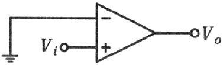
- 전압폴로어
- 비교기
- 미분기
- 전압-전류변환기
(정답률: 52%)
55. OP 앰프의 특징이 아닌 것은?
- OP 앰프는 두 개의 전원 단자(+, -) 를 가지고 있다.
- 두 개의 입력단과 1개의 출력단을 가지고 있다.
- 일반적으로 비반전 입럭은 (-)로 표기한다.
- 일반적인 전원 전압은 ±15V가 된다.
(정답률: 67%)
56. 그림과 같은 기호를 나타내는 것으로서 옳은 것은?
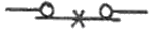
- 수동조작 자동복귀 b접점
- 전자 접촉기 b접점
- 보조 계전기 b접점
- 수동복귀 b접점
(정답률: 51%)
57. P형 반도체와 N형 반도체를 적합시키면 반송자가 결핍되는 공핍층이 생성된다. Si의 경우 이러 한 접합면 사이의 전위차는?
- 약 0.2V
- 약 0.3V
- 약 0.7V
- 약 0.9V
(정답률: 64%)
58. 피측량을 직접 측정하지 않고, 피측정량에 기지(旣知)의 일정량을 뺀 나머지 양을 측정하는 방법은?
- 편위법
- 영위법
- 치환법
- 보상법
(정답률: 51%)
59. 동기속도가 1800rpm이고, 회전자 회전수가 1728rpm인 유도 전동기의 슬립은 악 몇 %인가?
- 2
- 3
- 4
- 6
(정답률: 66%)
60. 압력 검출기와 관계가 없는 것은?
- 부르동관
- 벨로즈
- 다이어프램
- 서미스터
(정답률: 72%)
4과목: 기계정비 일반
61. 관의 직경이 비교적 크고 내압이 비교적 높은 경우에 사용되며 분해 조립이 관리한 관이음은?
- 나사이음
- 플랜지이음
- 용접이음
- 턱길이이음
(정답률: 73%)
62. 다이얼게이지 인디케이터를 “0"점에 맞추는 시기로 적함한 것은?
- 하루에 한번
- 매 측정하기 전에
- 인디케이터 교정 시
- 처음 측정하기 전에 한번
(정답률: 76%)
63. 펌프의 공동현상 방지책이 아닌 것은?
- 양흡입 펌프를 사용한다.
- 펌프의 회전수를 낮게 한다.
- 흡입 축에서 펌프의 토출량을 감소시킨다.
- 펌프의 설치 높이를 낮추고 흡입 양정을 낮게 한다.
(정답률: 46%)
64. 삼각형 모양의 다리로 운전이 원활하고, 전동효율이 높고, 소음이 적어 정숙운전이 가능하나 제작이 어럽고 무거우며 가격이 비싼 체인은?
- 부시 체인(bush chain)
- 오프셋 체인(offset chain)
- 사이런트 체인(silent chain)
- 더블 롤러 체인(double r이ler chain)
(정답률: 78%)
65. 기어의 손상 중 스코어링의 원인과 거리가 먼 것은?
- 급유량 부족
- 내압성능 부족
- 충격 및 하중
- 윤활유 점도 부족
(정답률: 56%)
66. 밸브의 무게와 양면에 작용하는 압력차로 작동하여 유체의 역류를 방지하는 밸브는?
- 감압 밸브
- 체크 밸브
- 게이트 밸브
- 다이어프램 밸브
(정답률: 77%)
67. 합성고무와 합성수지 및 금속 클로이드 등을 주성분으로 한 액상 개스킷의 사용방법으로 옳지 않은 것은?
- 얇고 균일하게 칠한다.
- 바른 직후 접합해도 관계없다.
- 사용 온도 범위는 0~30℃까지의 범위이다.
- 접합면의 수분, 기름, 기타 오물을 제거한다.
(정답률: 78%)
68. V벨트의 정비에 관한 사항으로 옳지 않은 것은?
- 풀리의 홈 하단과 빌트의 아랫면은 접촉되어야 한다.
- 2줄 이상을 건 벨트는 균등하게 처져 있어야 한다.
- 벨트수명은 이론적으로 보면 정 장력이 옳다고 본다.
- 베이스가 이동할 수 없는 축 사이에서는 장력 풀리는 쓴다.
(정답률: 55%)
69. 기어 감속기 중 평행 축형 감속기의 종류가 아닌 것은?
- 웜 기어 감속기
- 스퍼 기어 감속기
- 헬리컬 기어 감속기
- 더블 헬리컬 기어 감속기
(정답률: 76%)
70. 다음 중 원심 펌프에 해당되는 것은?
- 기어 펌프
- 플런저 펌프
- 벌류트 펌프
- 다이아프램 펌프
(정답률: 57%)
71. 송풍기 축은 압축열이나 취급하는 가스의 온도 등의 영항으로 운전 중에 축 방향으로 신장하려고 한다. 다음 중 온도 상승에 의하여 송풍기 축의 길이가 변할 때의 대책으로 옳은 것은?
- 신장되지 못하도록 제한한다.
- 축을 전동기측 방향으로 신장되도록 한다.
- 축을 전동기측 반대 방향으로 신장되도록 한다.
- 축을 전동기측의 전동기측 반대 방향 양쪽 모두 신장되도록 한다.
(정답률: 60%)
72. 축이음 중 원활한 동력 전달이 되고 축의 연결이 용이하여 진동과 충격이 잘 흡수되는 장점이 있어 최근 자동차 및 선박 등 산업 분야에 널리 사용되는 것은?
- 유체 커플링
- 스프링 축이음
- 플랜지형 축이음
- 분할 원통형 커플링
(정답률: 54%)
73. 500rpm 이하로 사용되던 길이 2m의 축이 구부러져 수정하고자 할 때 사용하는 공구는?
- 짐 크로(jim crow)
- 토크 렌치(troque wrench)
- 임펙트 렌치(impact wrench)
- 스크류 익스트랙터(screw extractor)
(정답률: 73%)
74. 펌프 흡입 쪽에 설치하며, 차단성이 좋고 전개시 손실 수두가 가장 적은 밸브는?
- 감압 밸브
- 글로브 밸브
- 앵글 밸브
- 슬루스 밸브
(정답률: 61%)
75. 윤활제의 부족에 의한 윤활 불량, 베어링 조립 불량, 체인, 벨트 등의 팽팽함, 커플링의 중심내기 불량이나 적정 틈새가 없어 추력을 받을 때 발생되는 전동기의 고장 현상은 무엇인가?
- 과열
- 코일 소손
- 기동 불능
- 기계적 과부하
(정답률: 65%)
76. 원심펌프 운전에서 병렬 운전이 유리한 경우는?
- 송출유량의 변화가 클 때
- 송출양정의 변화가 클 때
- 송출유량의 변화가 작을 때
- 송출양정의 변화가 작을 때
(정답률: 52%)
77. 기어 전동장치에서 원활한 전동을 위하여 백래시(backlash)를 주는 이유로 옳지 않은 것은?
- 기어의 가공 치수 오차 고려
- 윤활을 위한 유막 두께 유지
- 언더컷(undercut)의 방지를 고려
- 발열 팽창에 의한 중심거리 변화 고려
(정답률: 59%)
78. 무동력 펌프라고도 하며, 비교적 저낙차의 물을 긴 관으로 이끌어 그 관성작용을 이용하여 일부분의 물을 원래의 높이 보다 높은 곳으로 수송하는 양수기는?
- 마찰펌프
- 분류펌프
- 기포펌프
- 수격펌프
(정답률: 80%)
79. 축 정렬 준비사항 중 축이나 커플링이 진원에서 얼마나 편차가 되었는가를 확인하는 방법은?
- 봉의 변형량(Sat)의 측정
- 흔들림 공차(Run out)의 측정
- 커플링 면 갭(Face gap)의 측정
- 소프트 풋(Soft foot) 상태의 측정
(정답률: 71%)
80. 아주 높은 온도를 유지하는 장치의 실(seal)로 사용되고 다른 실에 비해 유밀기능이 떨어지므로 와이퍼(wiper)형 실로 많이 사용되는 것은?
- 금속실(metallic seal)
- 스프링 실(spring seal)
- 플랜지 실(flange seal)
- 기계적 실 (mechanical seal)
(정답률: 70%)